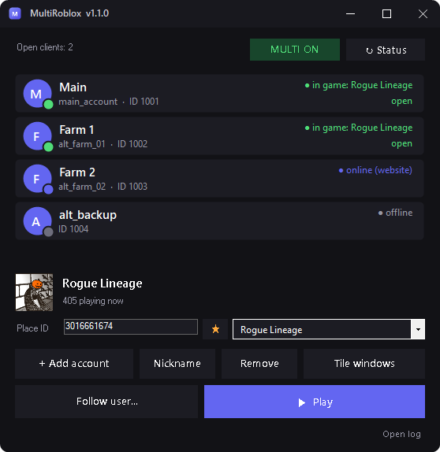

Multi-client launcher for Roblox
All your Roblox accounts, one tidy window.
A lightweight account manager and multi-client launcher. Sign in once through your own browser, then launch as many accounts as you like with a single click.
Windows 10 / 11 · free & open source (MIT) · a ~60 KB download, no installer

Everything you need, nothing you don't
One small program that does the boring parts of juggling several Roblox accounts.
True multi-client
Run several accounts side by side. MultiRoblox holds Roblox's single-instance lock so every client can start.
No stored passwords
Sign in through your default browser, with the normal captcha and 2FA. Only the session cookie is kept, encrypted with Windows DPAPI.
Launch many at once
Select accounts and press Play. It opens them one by one, confirms each client started and flags the ones that failed.
Games by Place ID
See the game's name, icon and live player count. Star your favorites and switch between them in one click.
Online status
See at a glance which account is offline, on the website or in a game, and which game it is in.
Tile windows
Arrange every Roblox client side by side in a neat grid, following your account order.
Up and running in a minute
There is nothing to install: extract the zip and run the program.
Add your accounts
Click + Add account. Your browser opens on roblox.com, you sign in as usual, and the account shows up in the list.
Pick a game
Type a Place ID or choose a favorite. The name, icon and live player count appear right away.
Press Play
Select the accounts you want, click Play, then Tile windows to arrange the clients.
Read this before you use it
- MultiRoblox is not affiliated with, approved by or endorsed by Roblox Corporation.
- Running several clients may violate Roblox's Terms of Use and can get accounts punished or banned. Use it at your own risk, preferably with disposable accounts.
- It relies on a mechanism of the Roblox client that may change or stop working with any update.